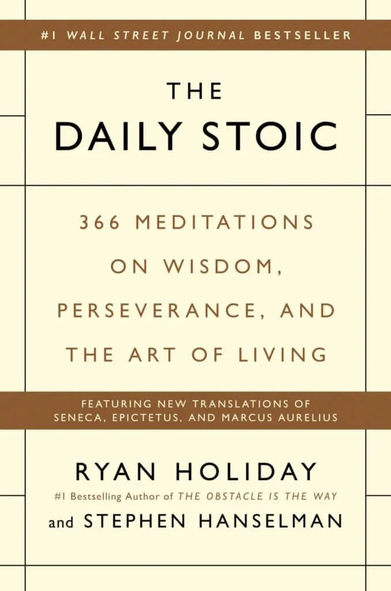

The Daily Stoic by Ryan Holiday and Stephen Hanselman is a year-long guide offering one Stoic meditation per day, blending timeless wisdom from Marcus Aurelius, Seneca, and Epictetus with modern commentary. Each entry includes a quote, historical context, and practical insights to help cultivate clarity, resilience, and virtue. Organized thematically by month, it teaches the three core disciplines of Stoicism—perception, action, and will—to help you live with purpose, manage emotions, and focus on what you can control.
Ravi K. — Excellent for beginners!
Shanti S. — Easy explanations and examples.
Vikas P. — Helped me start time management and focus.